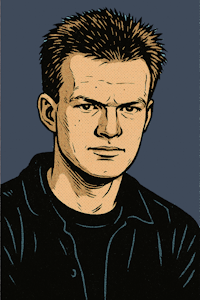

WAJ · Software Engineering
// PROFIL 2026

</> AI Software Engineer
Walter A. Jablonowski
KI-Systeme & App-Entwicklung
25+ Jahre Entwicklungserfahrung
Was ich für Sie umsetze
▸
KI-Agenten & Automationen – autonome Workflows, die Geschäftsprozesse messbar beschleunigen
▸
Datenlösungen – von Pipelines über Analytics bis zu skalierbaren Datenplattformen
▸
App-Entwicklung – performante Web- & Mobile-Apps, KI-gestützt entwickelt in Rekordzeit
▸
Architektur & Beratung – 25+ Jahre Erfahrung über Sprachen, Stacks und Branchen hinweg
Technologie-Schwerpunkte
KI-Agenten
LLM-Integration
MCP
Prompt Engineering
PHP
JavaScript
Python
TypeScript
SQL
MySQL / MariaDB
Oracle
SQL Server
Sprachen
Deutsch
Muttersprache
Englisch
C1 · sicher in Lesen, Schreiben und Verstehen
Verfügbarkeit
Ab sofort
Freiberuflich
bis 100 %
Festanstellung
16–20 h, temporär Vollzeit
Einsatz
Remote / Hybrid
Standort
Bamberg, DE